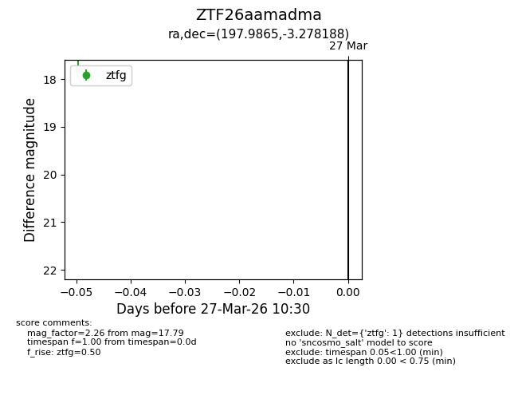
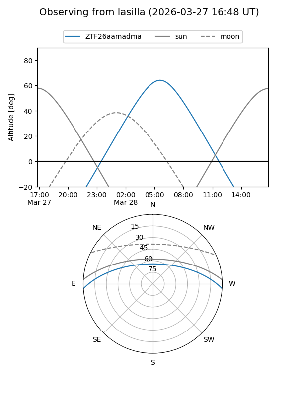
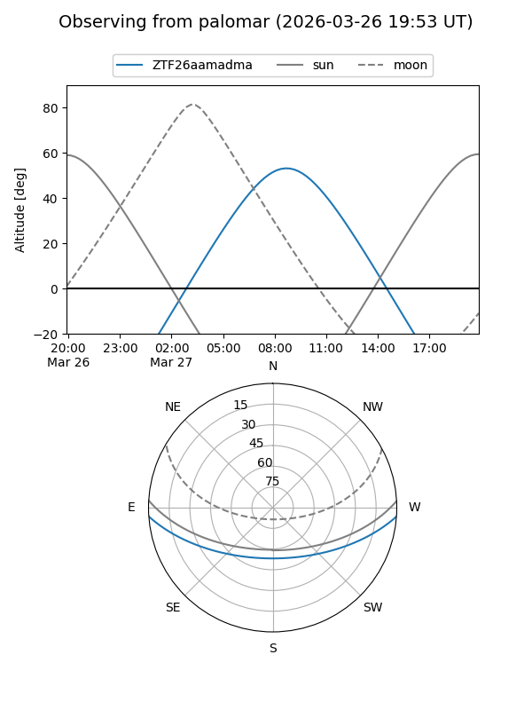

ZTF26aamadma
Target ZTF26aamadma at 2026-03-27 10:33
Aliases and brokers:
FINK: link
Lasair: link
ALeRCE: link
alt names
ZTF26aamadma (ztf,fink_ztf)
Coordinates:
equatorial (ra, dec) = 197.9865,-3.27819
equatorial (HMS+DMS) = 13:11:56.75,-03:16:41.48
galactic (l, b) = (312.9643,+59.19351)
Flags:
Photometry:
last ztfg=17.79
1 ztfg detections
Lightcurve

Visibility


Additional plots